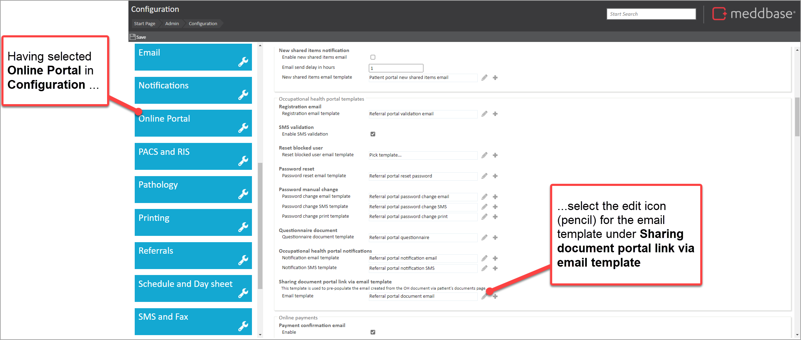
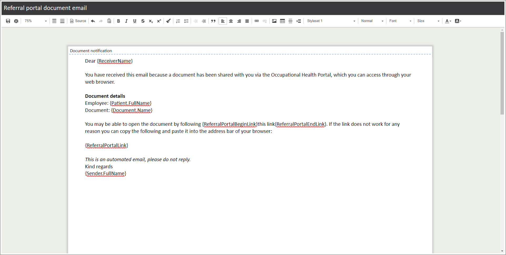
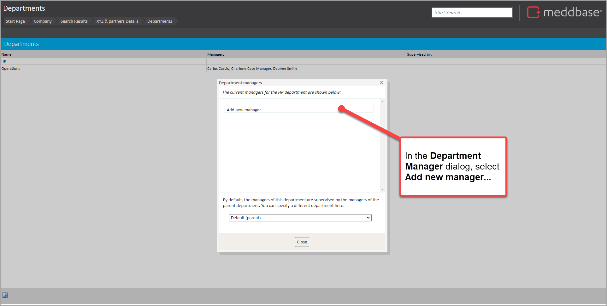
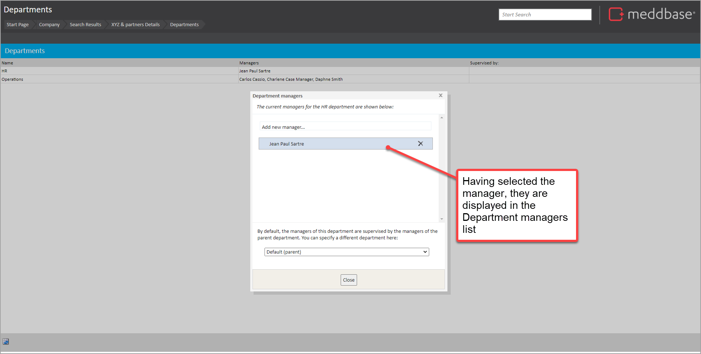
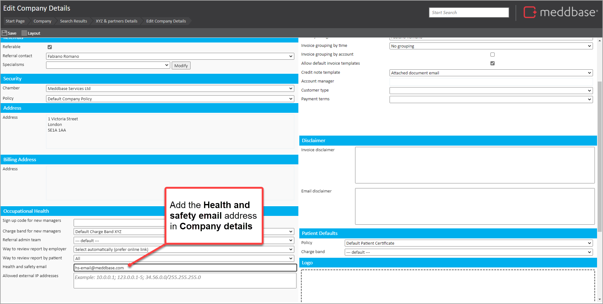
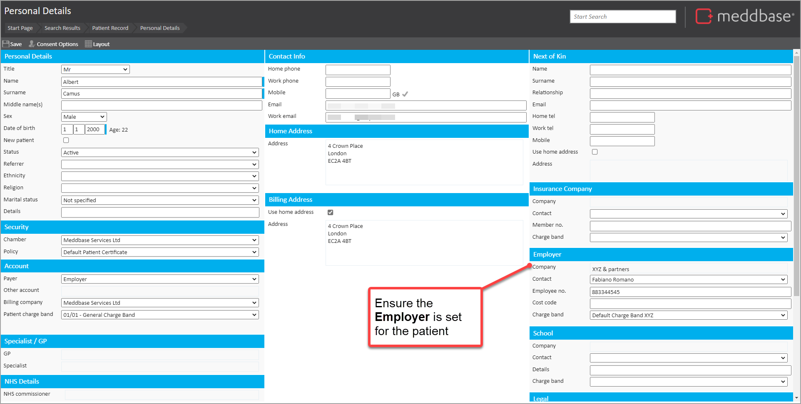
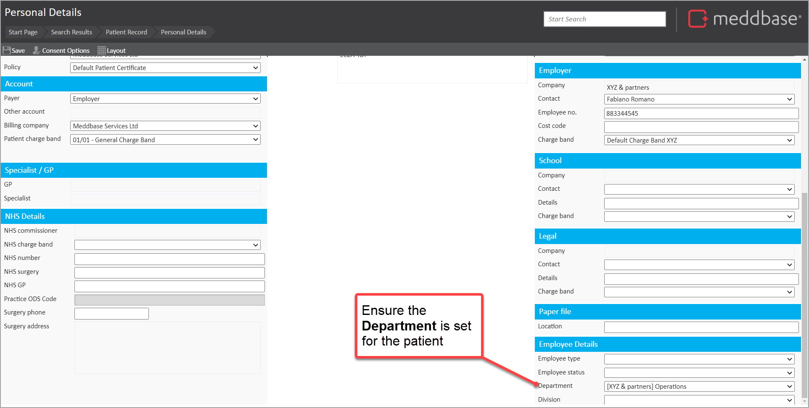

Meddbase enables documents to be shared online with employer contacts to be viewed in the Occupational Health (OH) Portal. In some scenarios, users need to manually notify employer contacts when a document is shared.
To support this, a feature has been developed which enables:
But before doing that, a range of pre-requisite configuration and data setup needs to be done.
This article outlines how to meet the prerequisites. Namely:
To see how the feature is used, see How to send a link to view a shared document in the OH Portal.
The sub-sections below set out a checklist of configuration activities needed before the feature can be used.
To enable the Emailing portal link from OH document feature, go to Admin > Config > Online Portal.
To select a link in a notification email to view the document, the OH Portal needs to be activated, configured and in live use.
The Occupational Health Portal is also referred to as the Referral Portal.
When this feature is activated, a pre-configured email template becomes available.
To view and update this template, do the following:
1. From the Start page of the main application, go to Admin > Configuration
2. In the Configuration section, select Online Portal
3. Navigate to the Occupational health portal template panel
4. For the item titled Sharing document portal link via email template, click on the pencil icon next to the template

The email template is displayed.

5. From here, edit and Save the template as required.
6. Close the browser tab for the template
There is a range of data that needs to be set for organisations and their related contacts. This is outlined below.
Where an email will need to be sent to department managers, these managers need to be set up for the employer.
To do this:
1. From the Start page, find the employer company
2. On the Company record page, select Departments
3. In the Departments view, click on the row representing the department for which the manager needs to be setup
4. In the Department managers dialog select Add new manager

5. In the Select a manager dialog that appears, search for the manager and select them
Back in the Department managers dialog, the selected record is presented.

Where an email will need to be sent to the Health & Safety officer, an email needs to be set up on the company record.
To do this:
1. From the Start page, find the employer company
2. On the Company record page, select Company details
3. Add a value to Health and safety email

4. Save the record
It's important that the Employer, Charge band and Department are set for the patient. To check this is done:
1. From the Start page, find the patient
2. On the Patient record page, select Personal Details
3. In the Employer section, ensure the Company and Charge band is setup

4. In the Employee Details section, ensure a Department value is selected

5. Save the record
The manager also needs to be assigned to the same department as the patient record and then added as a manager via the Company record.